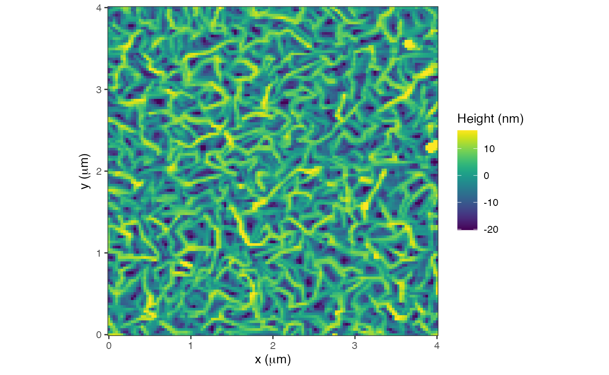
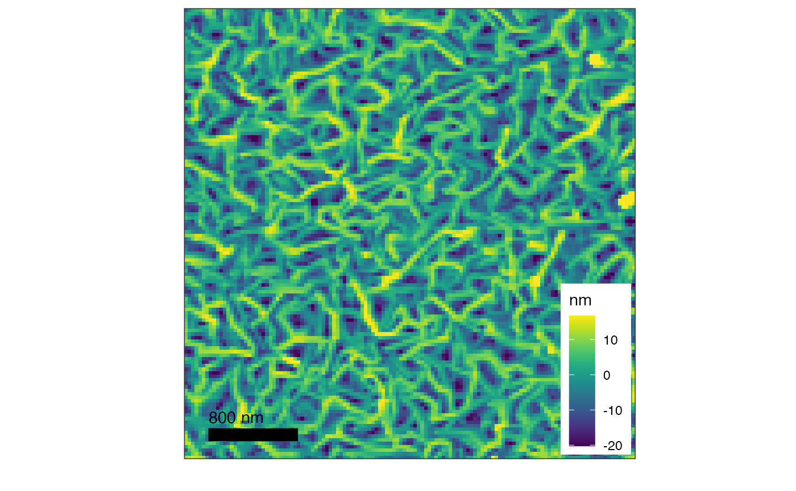
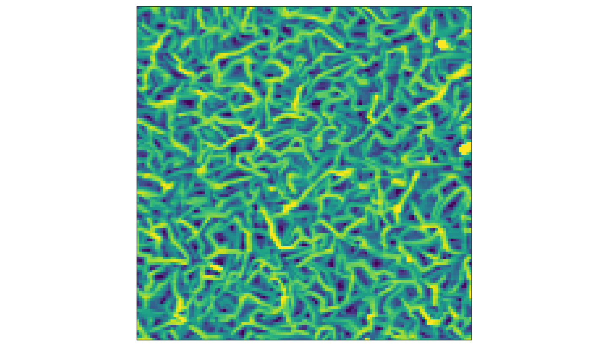

AFM-graphTypes
AFM-graphTypes.RmdLoading AFM image
fname = AFM.getSampleImages()[1]
afmd = AFM.import(fname)The AFM image can be displayed using graphTypes:
graphType 1
This is the basic and default graph for an AFM image:
plot(afmd, graphType=1)
#> Graphing: HeightRetrace
graphType 2
This graph has a square shape and adds a bar of length 20%; it places the scale inside the graph.
plot(afmd, graphType=2)
#> Graphing: HeightRetrace
The image can be saved with ggsave as it is graphed with ggplot.
graphType 3
This graph type is bare and has neither length scales nor legend.
plot(afmd, graphType=3)
#> Graphing: HeightRetrace
summary(afmd)
#> object description resolution size
#> 1 Cypher Image KC200, FePc, KC20170720Si 128 x 128 4000 x 4000 nm
#> 2 Cypher Image KC200, FePc, KC20170720Si 128 x 128 4000 x 4000 nm
#> 3 Cypher Image KC200, FePc, KC20170720Si 128 x 128 4000 x 4000 nm
#> 4 Cypher Image KC200, FePc, KC20170720Si 128 x 128 4000 x 4000 nm
#> channel history z.min z.max z.units
#> 1 HeightRetrace -32.45992 50.78832 nm
#> 2 AmplitudeRetrace 29.00730 32.78488 nm
#> 3 PhaseRetrace 63.92822 85.18923 deg
#> 4 ZSensorRetrace -29.44336 48.16414 nmgraphing 2 plots side by side
Use the package cowplot to create a graph with two plots. Use save_plot to save the graph.
library(cowplot)
fname2 = AFM.getSampleImages()[4]
afmd2 = AFM.import(fname2)
summary(afmd2)
#> object description resolution size channel history z.min
#> 1 Veeco Image 512 x 512 1769 x 1769 nm Height -145.6084
#> z.max z.units
#> 1 13.86895 m
g1 = plot(afmd, graphType = 3)
#> Graphing: HeightRetrace
g2 = plot(afmd2, 1, graphType = 3)
#> Graphing: Height
g3 = plot(afmd, 2, graphType = 3)
#> Graphing: AmplitudeRetrace
g4 = plot(afmd, 3, graphType = 3)
#> Graphing: PhaseRetrace
plot_grid(g1, g2, g3, g4,
labels=c('A','B','C','D'))